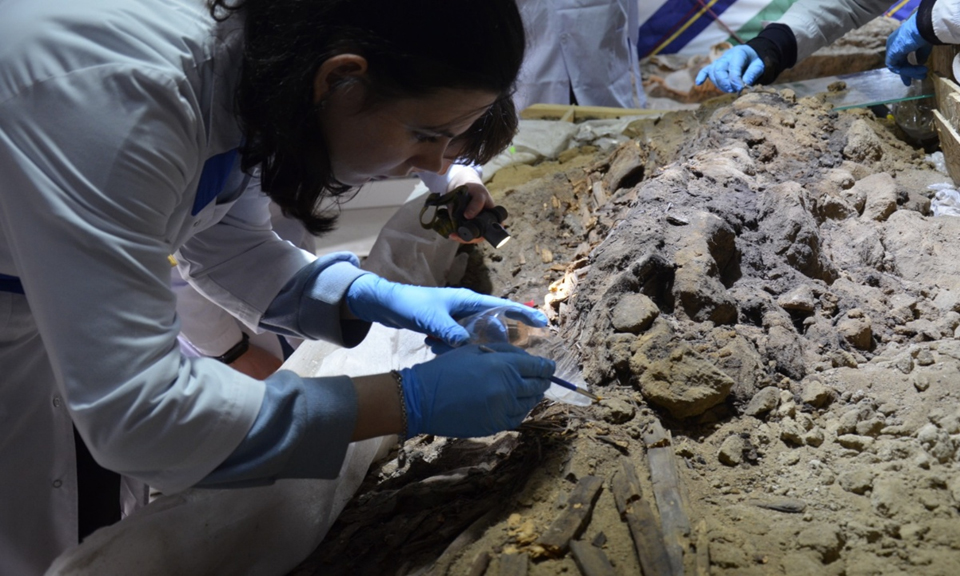

Established in 2023
Centre for Bioarchaeology
The Centre for Bioarchaeology is a research and educational unit of the Institute of Archaeological Research. Its activities focus on the comprehensive study of biological components associated with archaeological and palaeontological materials.
The Centre’s work is based on an interdisciplinary approach, combining methods from the natural sciences and the humanities.
Main research areas and objectives
Archaeozoology — the study of animal remains in order to investigate their role in the economy, culture and subsistence practices of past societies.
Palaeontology — the study of palaeontological materials as sources of information about ancient ecosystems, environmental conditions and evolutionary processes.
Anthropology — the study of human skeletal remains for the reconstruction of the biological and social characteristics of past populations.
Archaeoentomology — the study of modern and palaeoentomological fauna, particularly insects, as an important source of information about past environments, climatic conditions and the processes involved in the formation of archaeological sites.
Study of ecofacts — the documentation, systematisation and analysis of organic remains from burials and settlements, including seeds, evidence of burrowing animal activity, microbiological remains and other biological markers.
Development of a modern osteological reference collection — the creation and maintenance of comparative materials for research and the accurate interpretation of archaeological remains.
Partnerships and cooperation
The Centre develops sustainable partnerships with scientific, educational and research organisations, creating an interdisciplinary environment for the comprehensive study of bioarchaeological materials.
In cooperation with the Laboratory of Entomology of the Institute of Zoology of the Ministry of Education and Science of the Republic of Kazakhstan in Almaty, the Centre conducts research on the modern and palaeoentomological fauna of Kazakhstan and investigates ecological aspects of archaeological site formation.
Partnership with the Institute of Systematics and Ecology of Animals, Siberian Branch of the Russian Academy of Sciences in Novosibirsk supports the development of methods for archaeoentomological research, expert assistance in the identification of palaeoentomological materials and the exchange of scientific data.
Scientific cooperation with the A. Kh. Margulan Institute of Archaeology in Almaty includes the coordination of methodological approaches, specialist training and collaboration with its Laboratory of Physical Anthropology and Laboratory of Zooarchaeology.